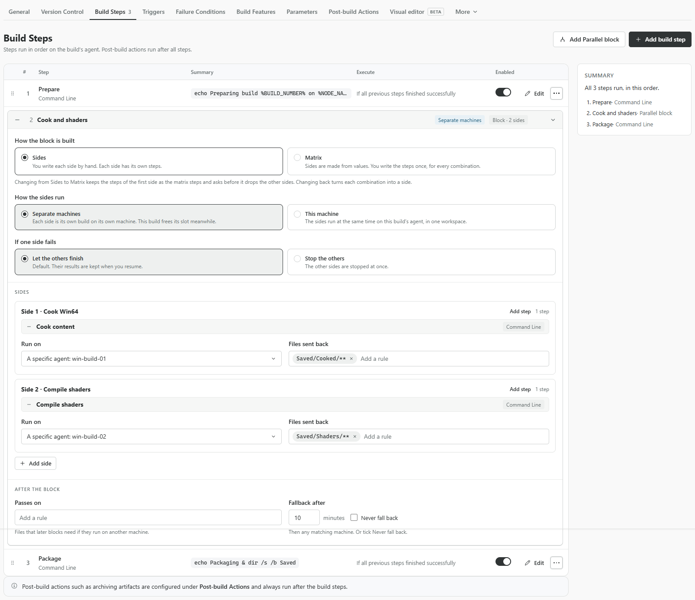

Parallel blocks and overrides
Run steps side by side and choose where each one runs. Cook three platforms at once, or send the shader compile to a bigger machine.
Parallel blocks
A Parallel block is one entry in the step list that holds two or more sides. Each side is a list of steps. The sides run at the same time; the steps after the block wait until all sides are done.
- Open Settings › Build Steps.
- Click Add Parallel block. A block named Parallel with two empty sides is added to the list.
- Under How the sides run, choose Separate machines or This machine (below).
- Under If one side fails, choose Let the others finish or Stop the others.
- Give each side a name, such as
PS5andXbox, and add its steps with Add step in the side's header. Add side adds another side. - Set Run on and Files sent back for each side, and Passes on and Fallback after for the block.

You can also drag Parallel from the Flow group of the visual editor's palette.
This machine or Separate machines
| Mode | What happens |
|---|---|
| This machine | The sides run at the same time on the build's agent, in the same workspace. Each side has its own block in the build console. The editor warns you when the sides write to the same files. |
| Separate machines | Each side runs as a side build on its own agent, fetching the same revision as the main build. While the sides run, the main build frees its agent slot and keeps its workspace. When the sides finish, it comes back to the same agent, copies in the files the sides sent back, and goes on. |
For Separate machines you also set:
- Run on for each side, for example the pool Consoles for the PS5 side.
- Files sent back for each side, as rules such as
Saved/StagedBuilds/**. - If one side fails: let the others finish (the default) or stop the others. Either way, the build fails after the block.
- Fallback: if the first agent is not free again within 10 minutes (you can change this, or choose never), or it went offline, the build goes on on any matching agent. It fetches the same revision there and copies in the files it needs.
Side builds show under their main build in the build list and the queue, never as builds of their own. Links such as Last successful build skip them.
Matrix mode
Instead of writing each side by hand, you can write the steps once and give values such as platform and configuration. Every combination then runs as its own side. Open the block and click Change to Matrix. See Matrix mode for Parallel blocks.
Per-step "Runs on"
Any step can run on another machine than the rest of the build. Open the step and find Run on:
| Choice | Meaning |
|---|---|
| Same machine as before | The default. No new fetch. |
| Any matching machine | Any agent that meets the build configuration's agent requirements. |
| A pool or label | For example pool Consoles or label vs2022. Another expression… lets you type a label expression. |
| A specific agent | One agent by name. If it is offline, the step waits for it and shows why, unless you set a fallback. |
- Fallback after … minutes, or Never fall back: how long to wait for the chosen machine.
- Passes on: files that later steps need if they run on another machine, such as
Intermediate/**. They are copied only when a later step really lands elsewhere. - Files sent back: when the step runs on another machine, the files it creates or changes there come back to the build's own workspace. Rules such as
Saved/Logs/**narrow them; choose Nothing to bring nothing back.
Overrides
A step can override environment values at run time, for one step only:
- Environment variables on the step: one
NAME=valueper line, added for this step's process only. - Environment filters, under Advanced: keep only the variables you name. A parameter that a filter removes stays removed.
- Outputs: a step can declare values it sets, such as
version(text, number, true/false or file). The script sets them with a##buildspawn[setParameter …]message, and later steps read them as%version%. A step that ends without setting a declared output fails with did not set output version. See Setting parameters from a build.
Steps inherited from a project or template can be overridden too: the override changes them in this build configuration only. See What a project passes down.